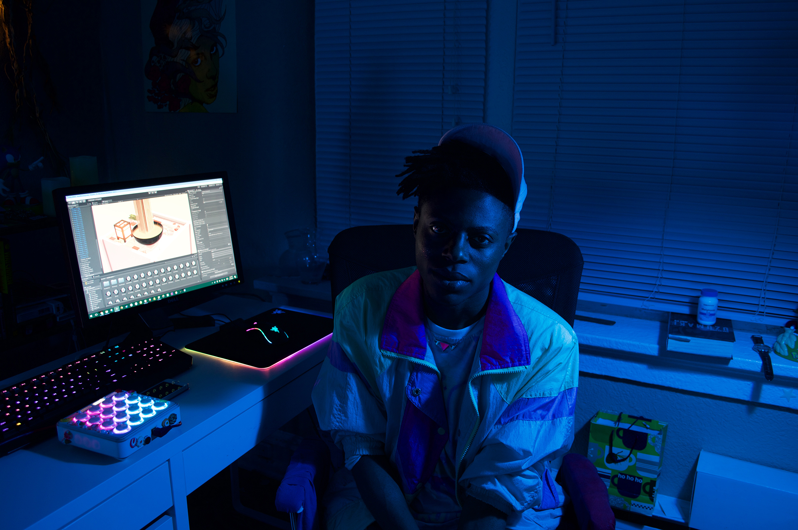
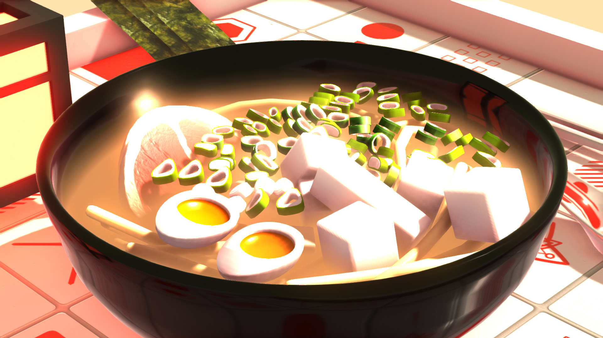
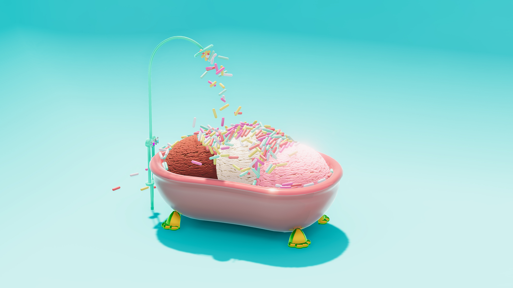

Terrifying Jellyfish on making games out of food
March 6, 2018
You've been making games since you were 13. Was it just sort of a
natural progression for you, going from loving games to making them?
It did feel like a pretty natural progression. I've always had an
interest in games. The first console I ever had was a Sega Genesis
and Sonic the Hedgehog 2 was the firt game I played that had such a
huge influence on me. To this day that game inspires the colors that
I use and the vibe and enthusiasm I try to put into my work. That
game was just really formative for me and I loved it so much.
After playing the game for a while we discovered the debug mode
cheat, which allowed you to go around the map and place things in
the game. It was pretty much just a testing tool for the developers,
but that really inspired me. It revealed to me an extra layer that
goes on beneath the surface of the game that the average player
doesn't even know about. I think that's what subconsciously inspired
me to pursue this, even before I knew what went into games or that
it was something that I could do. Because of that I was telling
people, "Oh yeah, I want to be a game designer when I grow up"... but
never did I think I would actually accomplish that.

Do you remember the first thing that you made where you're like,
"Oh, this is actually a real thing. This is more than just a hobby
or something I do for fun. This feels real."
The second I got my first scipt working, and even more so the
second I made something move on the screen-that was such a huge
moment for me. To this day it still doesn't get old. The first time
you see something on the screen move because of code you've written
is just like, "Wow." You feel like it's way more in your grasp than
you'd ever thought possible. I remember jumping up and almost being
teary I was so happy. I was just like, "Yo, I bt I can make a full
game."
Looking at your website, it seems like your entire identity as a
creator/designer is already to fully realized. Your games are all
visible, you link out to your collaborators, and you have merch for
sale. How did you develop you identity? Was it something you had
in mind from the beginning?
Yeah. I've always had this visual aesthetic. I always loved
designin logos for things. I love picking out color schemes. I
loved graphic design even before I knew what "graphic design" was.
Even back in the days when all I had was MS Paint I would sometimes
draw out website layouts and stuff just because it was fun. Later on
when it was time to actually create an identitfy for Terrifying
Jellyfish I was like, "Okay, I'll just make it as neat as possible
and I'll make it as colorful as I see it in my head. I'm just gonna
make it super me." That's how it started. When I started the company
in 2014, I was 18. I already knew what kind of stuff I liked and
what I wanted it to be and what direction I wanted the brand to go
in simply because I knew I wanted something that appealed perfectly
to my own interests. I only worried about pleasing myself. It
evolved from there.

What drew you specifically towards creating games as opposed to
being a graphic designer or a a video artist? What is it about games
that appeals to you?
Well, I love expressing myself in a different mediums. I also do video
work every now and then or I'll do something 2D just to try
something different. there's a lot of platforms that I want to
express myself in. I can never have enough creative outlets, but I
always come back to games because they feel so exciting to me. I
think that's in part because of what a relatively new genre it is.
With video games, I feel like there's so many permutations of what
you can do with that platform and still so little that's been
explored. So many games are just derivative of each other, so
there's still space to create something completely new and that
hasn't been seen before. A lot of indie games are going in that
direction. It's uncharted territory.
You'll soon be releasing NOUR, a game you funded on Kickstarter.
What was the impetus to make a game all about food?
It literally started with a bowl of ramen and a cup of bubble tea. I
knew that there was already a culture around those kind of food
items because when I'd scroll through Tumblr or twitter I'd see
endless pictures of ramen or bubble tea, these really beautiful,
stylized photos. I'd see lots of food pics on all of these artsy
looking blogs with these amaxing colors and well-composed pictures
of food. I was interested in that. I was like, "Okay, there really
is a whole aesthetic surrounding food, especially ones using soft
colors that kind of match and convey the flavor through the way they
look." I became interested in that concept so I first made the
bubble tea just as a test to see if that was something I could do in
3D. It was literally just an art test to see if I could create a shader that stimulates bubble tea.

So I did that and uploaded it to Twitter and the response was great.
People were like, "oh my gosh, as soon as I saw that the flavor
appeared into my mouth." I thought that was interesting, so I did
the same with my ramen scene and once again the response was the
same. The original tweet I made about it blew up. It was a little
video I recorded of noodles falling into a bowl and then meat
following it. People's responses inspired me to make more of it.
After I showed those off, a friend of mine was throwing an event and
wanted me to show something at it. He was wondering if I could show
my food art in some way. And I was like, "Well, I make games so what
better way to do this than to try to make a game out of it." Since
it was an art show and not really a games show, I just made it to
where you could press buttons to interect with the food-like buttons
that popped the popcorn or whatever. That was the first interaction of
the game, before I even knew it was gona be a game. It was just
playing with your food. People loved it. I found it interesting that
it was a game that could fit within this art space. It was engaging
enough while also not having any scores or objectives or the rules
of any other traditional game.
It's described online as a game with no goals or objectives. What is
it about that particularly that appeals to you?
To me it's something that makes the game a lot more accessible.
Sometimes when I'm at game events I see people appoach a game, but
they won't really play it themselves because they're afraid that
they're going to do it wrong, or they're gonna lose, or they're
gonna mess something up. They feel the need to perform, so they'll
just watch someone else play because they're too scared to play it
themselves. I've found that with a game with no goals or objective
people will see that the experience is open. You get out of it
exactly what you put into it. There's no wrong way to do it.
I've seen it at many game events. Someone will come up skittishly,
press the button, and just see what happens. When they see that that
something fun and rewarding happens, then they press another button.
By the end of it, they're smiling and mashing buttons and it's an
amazing experience. At the same time, anyone can enjoy it. You don't
have to be a gamer at all. You can just eperience it as an art
piece. Anyone can just walk up to it and interact with it.

Competitive games reach into our inner instincts to compete and be
the best and do something grandiose. Those kinds of games increase
tension. They increasingly raise the stakes, which can be stressful.
That's why some people like them. With something like NOUR, a game
with no real objective or way to do it wrong, it's a completely
different experience because you are simply pleasing yourself by
making something satisfying happen on the screen. It's about
satisfaction-here's your expectation and here's the immediate
feedback from your input. It's something completely different from
what people expect games to be.
When you're doing the kind of work that involves coding and hours
spent staring at a computer screen, how do you keep from burning out
and going crazy?
This is a problem I've run into recently. Something that I didn't
realize about working for yourself was just that a lot of times
you'll end up inside the house and you won't leave for days on end.
You'll just notice, "Oh, hey, I just haven't seen another human in a
day or two." I used to work in an office, so it's only recently that
I became self-employed. Before, there was a place to go to every
day. There was an environment that was changing and brand new every
day. There were people.

When you're working from home you don't really get that. You go stir
crazy. You get cabin fever. If you work alone with a computer,
something really important for your mental health and your
productivity is to figure out how are you going to have ineraction
with other people. How are you going to satisfy your other human
needs other than working? There's a lot of ways to manage that,
whether it be taking walk breaks or hitting up your friends. I think
it's important just to reach out to other people who are also
working freelance and be like, "Hey, want to work in the same
space?" Just to have that kind of flow. It makes you a lot more
cognizant of what you need to make yourself mentally happy. I would
say that if you don't ignore those signs then that's a good way to
prevent burn out. Your work will also improve if you remember to
take breaks, clear your head, and not get lost in it.
How do you get feedback? Do you have a trusted network of people to
share things with?
If it's something that would really require a designer's eye to test
out, I do have a select channel of other developers from all over
that I can talk to. It's definitely a good idea to create a network
of other people that are doing what you're doing so that you can
test out ideas, ask them what they think of things, etc. You often
need honest, open criticism of what you're doing. I ask friends if I
want an actual opinion from a player on what to do about things.
Sometimes, especially if it's just a little art thing that's
unfinished or whatever, I'll put it out to Tumblr or Twitter jus to
be like, "Hey, look at this neat little thing that I did. It's not
finished, what do you think?" It's important to show what you're
working on to different kinds of audiences.

When you're working from home you don't really get that. You go stir
crazy. You get cabin fever. If you work alone with a computer,
something really important for your mental health and your
productivity is to figure out how are you going to have ineraction
with other people. How are you going to satisfy your other human
needs other than working? There's a lot of ways to manage that,
whether it be taking walk breaks or hitting up your friends. I think
it's important just to reach out to other people who are also
working freelance and be like, "Hey, want to work in the same
space?" Just to have that kind of flow. It makes you a lot more
cognizant of what you need to make yourself mentally happy. I would
say that if you don't ignore those signs then that's a good way to
prevent burn out. Your work will also improve if you remember to
take breaks, clear your head, and not get lost in it.
How do you get feedback? Do you have a trusted network of people to
share things with?
If it's something that would really require a designer's eye to test
out, I do have a select channel of other developers from all over
that I can talk to. It's definitely a good idea to create a network
of other people that are doing what you're doing so that you can
test out ideas, ask them what they think of things, etc. You often
need honest, open criticism of what you're doing. I ask friends if I
want an actual opinion from a player on what to do about things.
Sometimes, especially if it's just a little art thing that's
unfinished or whatever, I'll put it out to Tumblr or Twitter jus to
be like, "Hey, look at this neat little thing that I did. It's not
finished, what do you think?" It's important to show what you're
working on to different kinds of audiences.
Knowing now how much time and energy it takes to bring a game to
fruition-including development and raising the money, etc-how do you
decide which projects to pursue? Do you just go where the energy
seems to be?
It can be difficult to figure that out because what you're excited
about might not be what everyone else is excited about. I think a
really important part of figuring out what project to tackle next is
just not getting feedback. It shows you that people around you are
indeed interested in this and if you were to pursue it that it would
be a really good endeavor, which is something that will motivate you
more to work on it. Often with games you'll find that your drive to
make something won't last as long as it will take to actually make
it. By the time you're six months into development you're like, "All
right. I'm over this idea. I want to work on something else."
If you get that active feedback from other players, other developers
early on, and if you see that they really like what you're doing and
they really like the idea, then that will motivate you to the finish
line. Just show people, get a guage of interest, but also listen to
yourself and listen to see if your heart is saying that this is a
project you truly want to work on.

You really have to feel it. For example, NOUR was a project I never
intended to be a full game, but it was the response of people on
Twitter and on Tumblr that drove me to make it. Thinking about it
now, it almost felt like it was a gift, "Oh, people want more of
this and I'm the only person who can give it to them? Here you go."
It's a super good feeling when people like something that you love
to work on and they want more of it."
